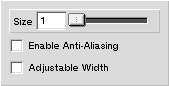

|
|
Straight Line -tool
The straight line -tool allows the drawing of straight lines. The tool is used by pressing the mouse-button down on the starting point of the line and releasing it at the wanted endpoint.
[There is currently a bug in Haiku's drawing algorithm that causes 'trails' to be left behind by this action. A zoom or other change in the display will remove these.]
Settings
Figure 1 shows the contents of the tool-setup-window when it is displaying the setup for straight line -tool.
Figure 1: Setup view for the straight line -tool.
| 
|
- Size
- This option controls the width of the line. The width is measured in pixels.
- Enable Anti-Aliasing
- When this option is enabled the borders of the lines will be smoothed to avoid step-like effect at the borders of the lines.
- Adjustable Width
- When this option is enabled the Size-option is ignored and the line is draw with the thickness of 1. After the endpoint has been set, you are allowed to adjust the width of the line by moving the mouse and then setting it by clicking one more time on the image.
|